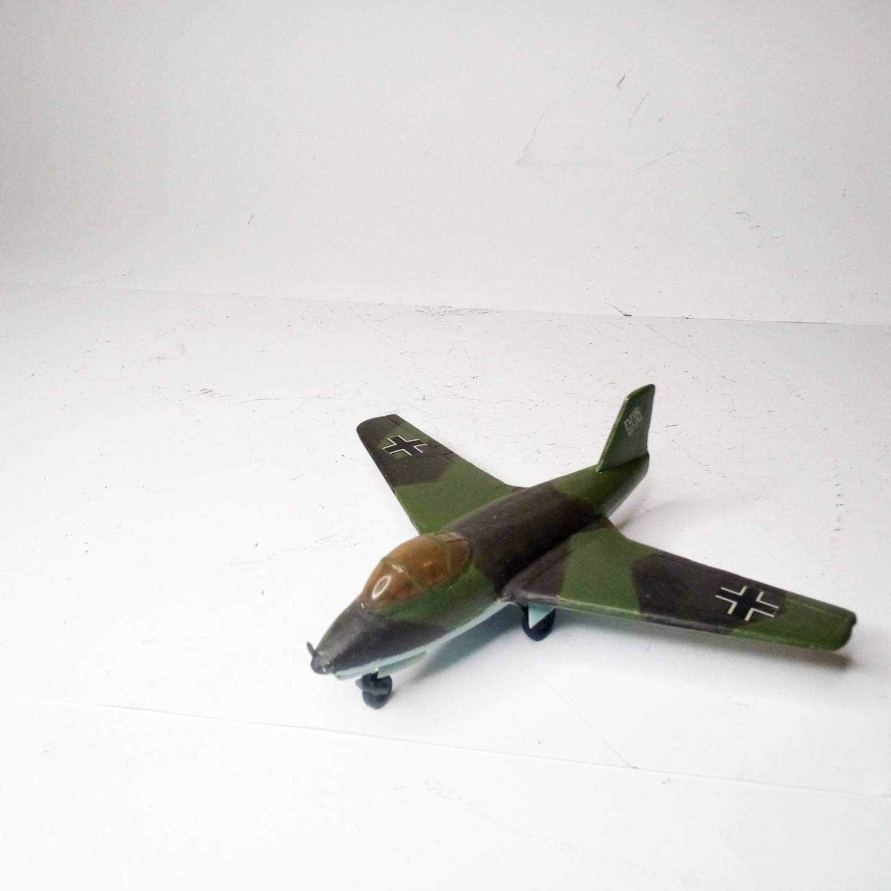
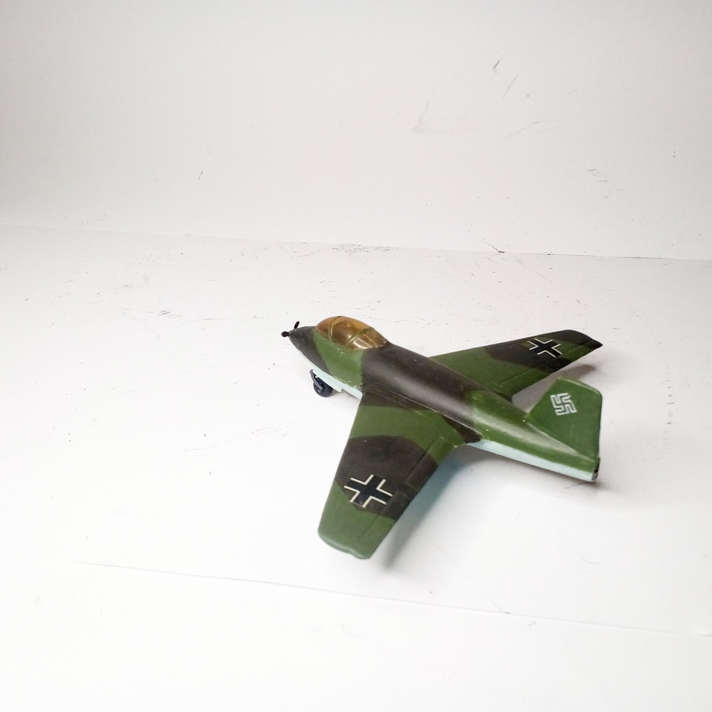

Aerei · scale model archive
Messerschmitt Me263 (aka Junkers Ju248) 1/72 Airmodel vacform
Messerschmitt Me263 (aka Junkers Ju248) 1/72 Airmodel vacform. #Airmodel #1/72

Photo gallery

English description
#Airmodel #1/72
Aerei · scale model archive
Messerschmitt Me263 (aka Junkers Ju248) 1/72 Airmodel vacform. #Airmodel #1/72

